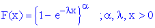

![[genexponential_cen_ex0]](genexponential_cen_ex0.bmp) Censored Generalized Exponential
Censored Generalized ExponentialModel

In this example the experiment is stoped after all but three of the N test items have failed. The last three items are therefore left censored at the failure time of the N - 3 item. The software
predicts the unobserved failure times of the last three items. Sorting these failure time then gives
predictions on when the N - 2, N - 1 and N th failure will occur.
model
{
for( i in 1 : N - 3) # observed failure times
{
x[i] ~ dgen.exp(alpha, lambda)
}
for(i in N - 2 : N) # censored observations
{
x[i] ~ dgen.exp(alpha, lambda)C(x[N - 3],)
}
for(i in 1 : 3) # predicted failure times of censored items
{
x.pred[i] <- ranked(x[N- 2 : N], i)
}
# Prior distributions of the model parameters
alpha~ dgamma(0.001, 0.001)
lambda~ dgamma(0.001, 0.001)
}
The data given here arose in tests on endurance of deep groove ball bearings.The test involves 23 ball bearings but the test is halted after 20 ball bearings have failed. The data are the number of million revolutions before failure for each of the 20 ball bearings in the life test plus the censoring time of the 20th failure for the remaining 3 ball bearings.
Lawless, J.F. (2003). Statistical Models and Methods for Lifetime data , Second edition, John Wiley & Sons, New York.
Data ( click to open )
Inits for chain 1 Inits for chain 2 ( click to open )
Results
![[genexponential_cen_ex2]](genexponential_cen_ex2.bmp)